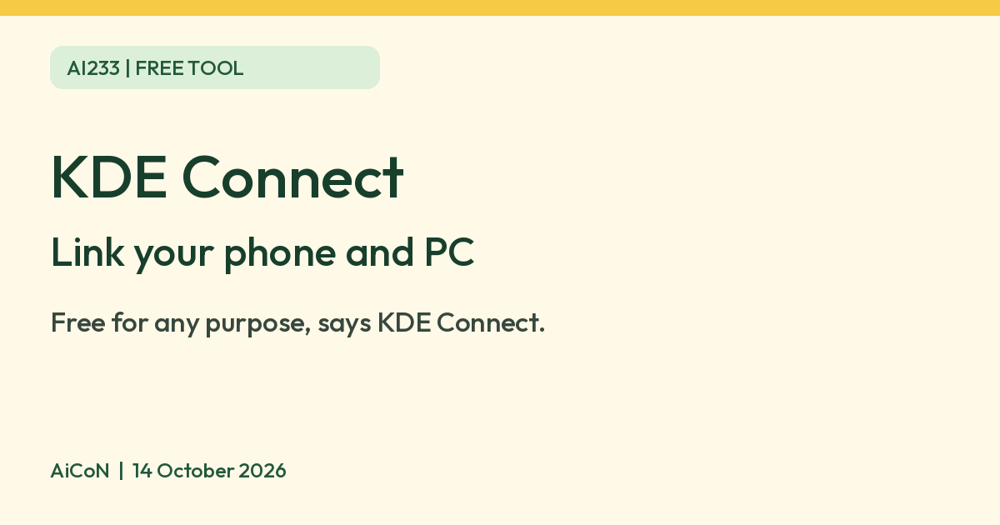

KDE Connect: free tool to link your phone and computer
KDE Connect says it is open source and free to use for any purpose. It links your phone and computer, and its Android app asks for many permissions.

What it is
KDE Connect is a free tool that links your phone and your computer. Its homepage says you can send files between them, see phone notifications on your computer, reply to text messages from your computer, ring a lost phone, and control music playing on the computer from your phone. It comes from the KDE community, an open source project. It is not an AI tool. We included it because it is a free tool from an official source.
Is it free?
Yes. KDE Connect's homepage says: "Open Source. Free to use. For any purpose. Forever." We found no paid tier on the pages we read.
Which devices
- The download page lists Linux desktops, Android (Google Play, Huawei AppGallery or F-Droid), Windows (Microsoft Store, Chocolatey or an offline installer), macOS and iOS.
- macOS: the page says a stable release is available, plus untested nightly versions.
- iOS: the page says there is a native port on the App Store and a pre-release test version. It points to an iOS README for "important data disclosure information" and known limitations. We did not read that README.
- The privacy policy describes direct device-to-device transfer over a local network. The homepage also advertises VPN support, so this is not a claim that same-Wi-Fi is the only supported setup. We did not test VPN use.
Privacy and permissions
- KDE Connect's privacy policy says it "never sends any information to KDE nor to any third party". It says data goes from one device to the other over the local network, "never through the internet", and that network traffic is always encrypted using TLS 1.2.
- The policy lists what the Android app asks for: storage, contacts, notifications, SMS, battery, location (only for the Trusted Networks feature), accessibility (to let another device control your phone) and the list of installed apps (to filter which notifications are forwarded).
- Features such as clipboard sharing, contacts, SMS and browsing your phone's files can be turned off by disabling the matching plugin, says the policy.
- AiCoN advice: these are powerful permissions. Pair only your own devices and switch off plugins you do not need.
India
- We found no India-specific statement or age limit on the pages we read.
Frequently asked questions
Is KDE Connect free?
Yes. Its homepage says it is open source and free to use for any purpose.
Does it send my data to KDE?
Its privacy policy says it never sends information to KDE or any third party.
Is it AI?
No. It links your phone and computer. We included it because it is a free tool from an official source.
How to start
- Open the official download page and choose the apps for your phone and computer. Check the requirements on the linked store or installer page before downloading.
- For a simple starting setup, connect your own devices to the same trusted local network. Open KDE Connect on both.
- Pair only devices you recognise. Review each permission request and leave plugins you do not need switched off.
- Try sending a non-sensitive test file. Check the received file before using more features. AiCoN did not test setup, feature parity, encryption or VPN connections.
What changed since this post?
Homepage, download page and privacy policy rechecked on 14 October 2026. The free-for-any-purpose statement remains. Device routes and permission details above are vendor claims, not installation tests. Logo licensing notice and copy added. The homepage advertises VPN support while the privacy policy uses absolute local-network wording; we have not verified that distinction in use. iOS README, store-region availability and age limits remain unchecked.
Sources: KDE Connect, Download, Privacy policy. Checked 14 October 2026.